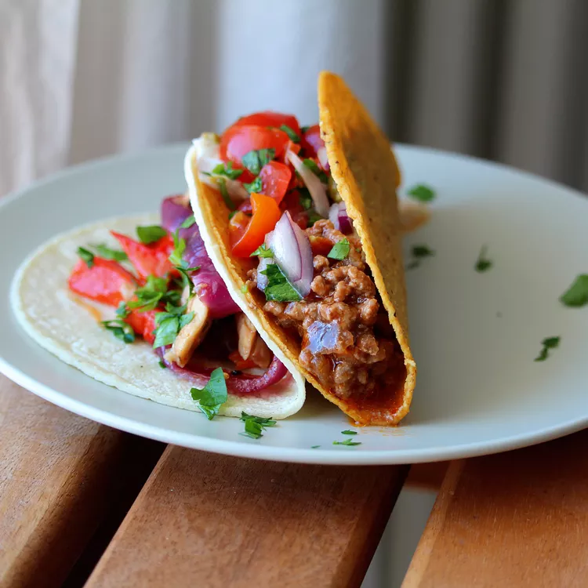

Taco Recipe

Description
This taco meat recipe makes the best filling for tacos.
You have to buy everything else, of course.
Make a big batch and use it for multiple different meals:
add to bean burritos or mix with a can of beans (kidney, red, or pinto) and use for Frito pie, Navajo tacos, or taco salad.
Ingredients
- 1 pound lean ground beef
- ½ teaspoon onion powder
- ½ teaspoon garlic salt
- ½ teaspoon celery salt
- ½ teaspoon ground cumin
- 1 (8 ounce) can tomato sauce, or more to taste
Instructions
- Heat a large skillet over medium-high heat.
Cook and stir ground beef in the hot skillet until browned and crumbly,
5 to 7 minutes.
- Season beef with onion powder, garlic salt,
celery salt, and cumin. Pour tomato sauce over beef,
stir to coat, and simmer until slightly thickened, about 5 minutes.